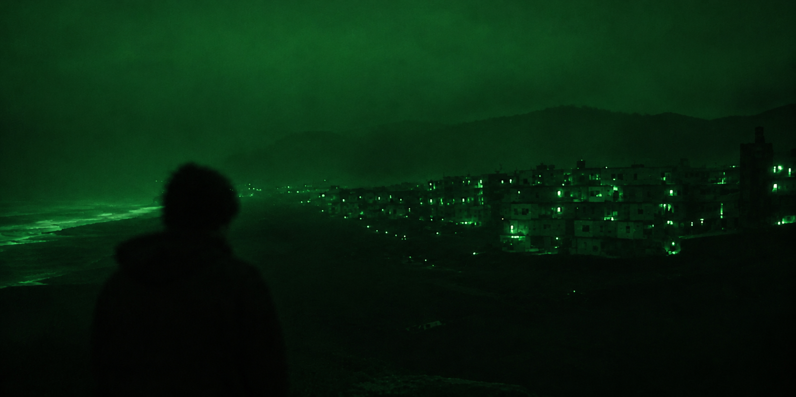
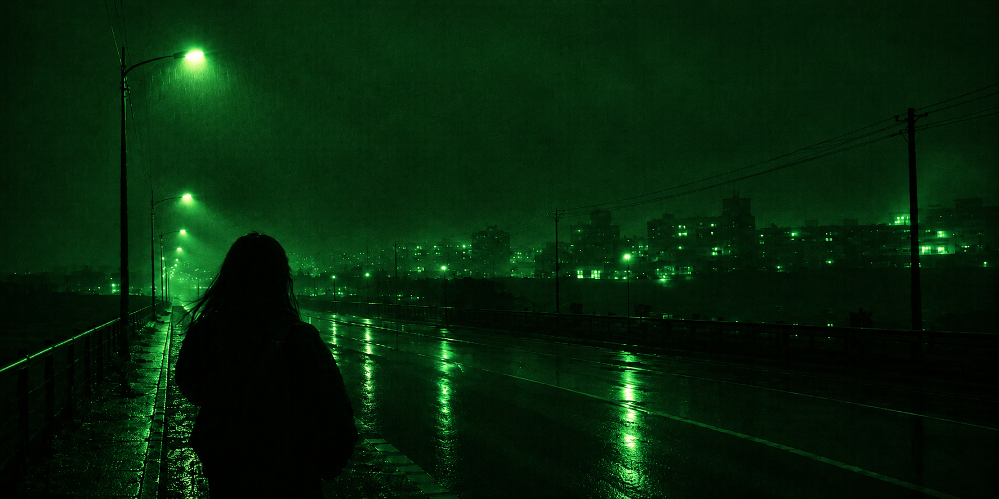
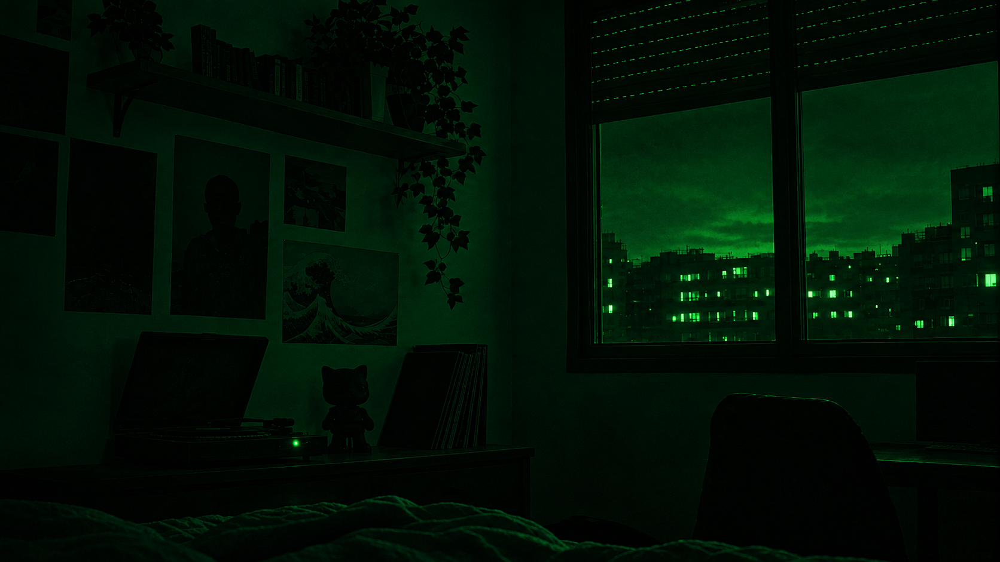

Verde
Mezclado con el rojo da amarillo y con el azul da cian. Es el color al que más sensible es el ojo humano.
Ver más


Mezclado con el rojo da amarillo y con el azul da cian. Es el color al que más sensible es el ojo humano.
Ver másLa magia se llama RGB (Red, Green, Blue: rojo, verde y azul). Es un modelo aditivo: mezcla haces de luz, y con todo apagado (nivel 0) se ve negro.
Cada canal va del 0 al 255, lo que da más de 16,7 millones de colores.
Fuentes: "Colour Spaces Explained: RGB vs CMYK", "Descubre el Significado RGB"